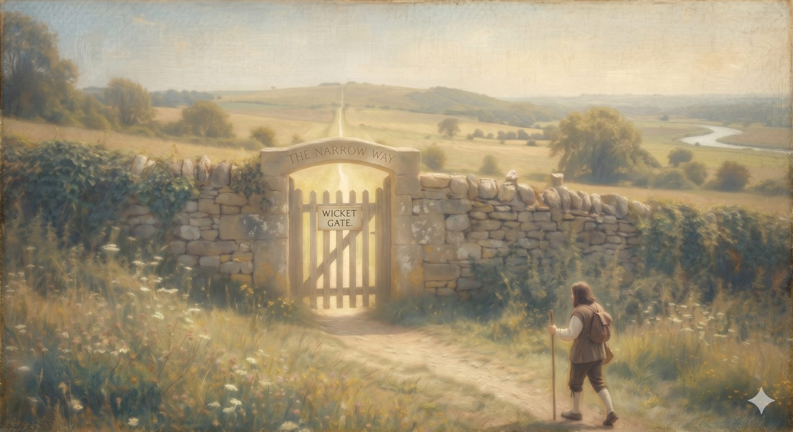

The Wicket Gate
Where the true road begins — and whether an honest, thinking person can walk through at all.
"Knock, and it will be opened to you." Matthew 7:7 (ESV)
At last the pilgrim reaches it: a small gate set in a wall, with a sign above it — Knock, and it shall be opened unto you. It is narrow. It is unimpressive. A man named Goodwill waits on the other side to let pilgrims in. This is where the true road actually begins — not at the City he left, not in the Slough, not on the smooth detour, but here, at a gate you have to choose to knock on.
And many people stall right here, at the threshold, for a reason worth taking seriously. They have a question. Is any of this even true? Can a thinking person walk through this gate without leaving their mind on the other side of the wall? Before we go a step further, we should do what most people in a hurry will not. We should stop at the gate and ask the question slowly.
Part OneThe most famous question, and the man who would not wait for the answer
The most famous question ever asked about truth was asked by a man standing a few feet from the answer — and then he walked out of the room. It was the trial of Jesus. Pilate, losing control of the proceedings, turns to his prisoner and asks, what is truth? And then, John tells us, without waiting for a reply, he goes back outside. He had truth standing in front of him in handcuffs, and he asked where it might be found.
It is easy to feel superior to Pilate. We should not. His question was a posture as much as a sentence — the shrug of a man who had already decided the answer would cost more than he wanted to pay. That shrug is still with us; it has only changed clothes. That's true for you. Who's to say? Everyone has their own truth. Sometimes that is honest confusion. Sometimes it is a way of leaving the room before you have to hear something that would require something of you.
So let us not leave the room. At its root, truth is not complicated: a thing is true when it matches the way things actually are. "It is raining" is true only if it is, in fact, raining. Whatever else faith is, the Christian claim is exactly that kind of claim — that certain things are so, whether or not they are comfortable, whether or not they are popular. Jesus rose, or he did not. That is not a matter of taste. And claims of that kind can be examined.
📖 The Scripture behind this Entailed›
The claim: The Christian faith makes objective truth-claims — things that are so whether or not they are comfortable or popular — and therefore can be examined rather than merely felt.
- 1 Corinthians 15:14, 17 (ESV) — “And if Christ has not been raised, then our preaching is in vain and your faith is in vain. … you are still in your sins.”Paul stakes the entire faith on a historical fact that is either true or false.
- Luke 1:3–4 (ESV) — “it seemed good to me also … to write an orderly account … that you may have certainty concerning the things you have been taught.”The Gospel is offered as investigable testimony aimed at certainty, not private feeling.
- John 18:37–38 (ESV) — “For this purpose I have come into the world—to bear witness to the truth. … Pilate said to him, ‘What is truth?’”Christ claims to testify to objective truth; Pilate’s shrug walks away from it.
Drawn by good and necessary consequence from how the biblical writers stake and frame their claims.
Part TwoTwo voices at the gate
Stand at this gate long enough and you will hear two voices, each insisting it is the only honest way through. They sound like opposites. They are usually handed to us as the only two options.
The first says: prove it, and then I'll believe. Faith is irresponsible until reason has signed off; satisfy my mind, and then I will commit. The second says the reverse: stop thinking, and just have faith. The holiest thing you can do with a hard question is to stop asking it. One voice belongs to the skeptic — and to a certain kind of believer. The other belongs to a tired and well-meaning piety.
The crucial move — the one this whole gate turns on — is to find the true thing each voice is protecting before saying where it goes wrong. The first voice is right that truth matters, that faith should not be blind or gullible, that God gave us minds and is not honored when we switch them off. The second is right that some things are too large to be reduced to what we can prove on demand, that endless analysis can become its own way of never having to trust anyone, that you cannot put a person — or a Person — under a microscope and call the result a relationship.
Each is guarding something real. And each one, left alone, becomes a way of never actually meeting God. The first quietly crowns the human mind as the final judge that even God must satisfy. The second pulls the mind out of the very faith God asks us to love him with.
In plain terms
You are not stuck choosing between "prove everything first" and "believe without thinking." That is a false menu.
There is a third way, and it is the oldest one the church knows: faith seeking understanding. You begin to trust, and from inside that trust you come to understand — the way you come to know any person worth knowing. You do not wait until you have exhaustive proof of someone's character before you risk the friendship; you step in, and the knowing deepens as you go.
Part ThreeFaith seeking understanding
The phrase is ancient — faith seeking understanding — and it turns down both voices at the gate without insulting either. It does not say "believe blindly." It does not say "prove everything first." It says faith and understanding travel together, each helping the other along the road, neither one waiting at home until the other is finished.
📖 The Scripture behind this Interpretation›
The claim: The right path between ‘prove everything first’ and ‘stop thinking and just believe’ is ‘faith seeking understanding’ — trust that begins, and grows into deeper knowing.
- Isaiah 7:9 (ESV) — “If you are not firm in faith, you will not be firm at all.”(Several older translations: ‘unless you believe, you will not understand’ — the verse Anselm built the phrase on.)
- Hebrews 11:6 (ESV) — “And without faith it is impossible to please him, for whoever would draw near to God must believe that he exists.”Faith is the starting posture for drawing near and coming to know.
- John 7:17 (ESV) — “If anyone’s will is to do God’s will, he will know whether the teaching is from God.”Knowing follows a prior willingness to trust and obey — understanding from inside commitment.
An honored theological formula (Anselm, distilling Augustine), well-grounded in Scripture but not a direct quotation of it. Hold it as a trustworthy guide, not a proof-text.
This is not a trick to get you through the gate before you have thought. It is an honest description of how anyone comes to know what matters most. The evidence is real, and the next stretch of road — the Interpreter's House — is given over to looking at it squarely. But evidence was never going to carry you the whole way by itself, any more than a background check could make you love someone. At some point you knock. The gate is narrow because the door is a Person, and you can only come to a person by trusting enough to draw near.
The gate is narrow because the way is a Person — and a Person is known by drawing near, not by standing back.
Part FourThe strange order of knowing
There is one more thing to say at the gate, and it is the sharpest answer Scripture gives to the question of how a person comes to know any of this is true. Jesus says it in the middle of an argument about his own authority: if anyone's will is to do God's will, he will know whether the teaching is from God.
Read that slowly, because it inverts the order we expect. We assume knowing comes first and doing follows — settle whether it is true, and then you will know how to live. Jesus says it also runs the other way: a heart actually willing to do God's will is given a kind of sight that detached analysis never reaches. It is the difference between studying a description of the sea and stepping into the water. Taste and see that the LORD is good, the Psalmist writes — taste, and then see. Some things become clear only to the one willing to live them, and stay opaque forever to the one who insists on certainty from a safe distance first.
This is not a trick to switch off your mind; it is an honest account of how the deepest knowledge works, even in ordinary life. You do not come to know a person's trustworthiness by auditing them from across the room. You come to know it by trusting them and finding, over time, that the trust was warranted. The gate opens to a will that is ready to walk, not only to a mind that is ready to weigh.
So this is the invitation at the threshold: bring your mind. Bring your questions — the gate is not afraid of them, and the rooms just past it are full of evidence to examine. But do not mistake the examining for the entering, and do not wait for a certainty that only walking can give. Knock, and it shall be opened. Just on the other side, the Interpreter is waiting to show you what there is to see.